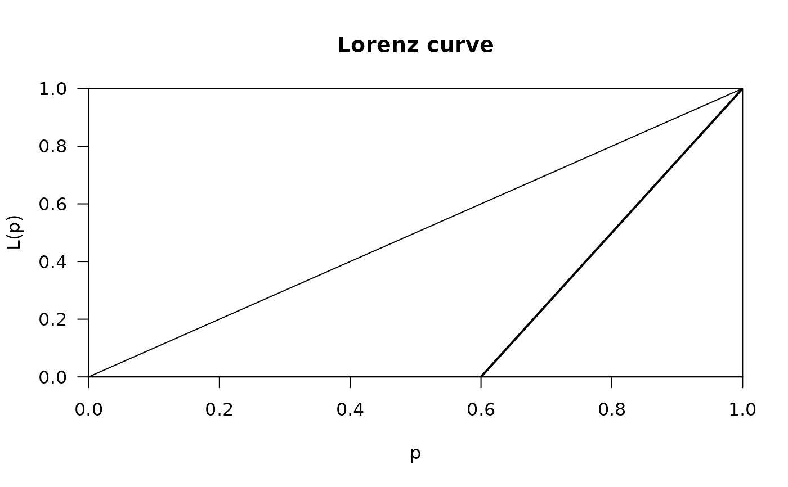

Gini.RdCompute the Gini coefficient, the most commonly used measure of inequality.
Gini(x, weights = NULL, unbiased = TRUE,
conf.level = NA, R = 10000, type = "bca", na.rm = FALSE)a vector containing at least non-negative elements. The result will be NA, if x contains negative elements.
a numerical vector of weights the same length as x giving the weights to use for elements of x.
logical. In order for G to be an unbiased estimate of the true population value, calculated gini is multiplied by \(n/(n-1)\). Default is TRUE. (See Dixon, 1987)
confidence level for the confidence interval, restricted to lie between 0 and 1.
If set to TRUE the bootstrap confidence intervals are calculated.
If set to NA (default) no confidence intervals are returned.
number of bootstrap replicates. Usually this will be a single positive integer.
For importance resampling, some resamples may use one set of weights and others use a different set of weights. In this case R would be a vector of
integers where each component gives the number of resamples from each of the rows of weights.
This is ignored if no confidence intervals are to be calculated.
character string representing the type of interval required.
The value should be one out of the c("norm","basic", "stud",
"perc" or "bca").
This argument is ignored if no confidence intervals are to be calculated.
logical. Should missing values be removed? Defaults to FALSE.
The range of the Gini coefficient goes from 0 (no concentration) to \(\sqrt(\frac{n-1}{n})\) (maximal concentration). The bias corrected Gini coefficient goes from 0 to 1.
The small sample variance properties of the Gini coefficient are not known, and large sample approximations to the variance of the coefficient are poor (Mills and Zandvakili, 1997; Glasser, 1962; Dixon et al., 1987),
therefore confidence intervals are calculated via bootstrap re-sampling methods (Efron and Tibshirani, 1997).
Two types of bootstrap confidence intervals are commonly used, these are
percentile and bias-corrected (Mills and Zandvakili, 1997; Dixon et al., 1987; Efron and Tibshirani, 1997).
The bias-corrected intervals are most appropriate for most applications. This is set as default for the type argument ("bca").
Dixon (1987) describes a refinement of the bias-corrected method known as 'accelerated' -
this produces values very closed to conventional bias corrected intervals.
(Iain Buchan (2002) Calculating the Gini coefficient of inequality, see: https://www.statsdirect.com/help/default.htm#nonparametric_methods/gini.htm)
If conf.level is set to NA then the result will be
single numeric value
and
if a conf.level is provided, a named numeric vector with 3 elements:
Gini coefficient
lower bound of the confidence interval
upper bound of the confidence interval
Cowell, F. A. (2000) Measurement of Inequality in Atkinson, A. B. / Bourguignon, F. (Eds): Handbook of Income Distribution. Amsterdam.
Cowell, F. A. (1995) Measuring Inequality Harvester Wheatshef: Prentice Hall.
Marshall, Olkin (1979) Inequalities: Theory of Majorization and Its Applications. New York: Academic Press.
Glasser C. (1962) Variance formulas for the mean difference and coefficient of concentration. Journal of the American Statistical Association 57:648-654.
Mills JA, Zandvakili A. (1997). Statistical inference via bootstrapping for measures of inequality. Journal of Applied Econometrics 12:133-150.
Dixon, PM, Weiner J., Mitchell-Olds T, Woodley R. (1987) Boot-strapping the Gini coefficient of inequality. Ecology 68:1548-1551.
Efron B, Tibshirani R. (1997) Improvements on cross-validation: The bootstrap method. Journal of the American Statistical Association 92:548-560.
See Herfindahl, Rosenbluth for concentration measures,
Lc for the Lorenz curveineq() in the package ineq contains additional inequality measures
# generate vector (of incomes)
x <- c(541, 1463, 2445, 3438, 4437, 5401, 6392, 8304, 11904, 22261)
# compute Gini coefficient
Gini(x)
#> [1] 0.5134346
# working with weights
fl <- c(2.5, 7.5, 15, 35, 75, 150) # midpoints of classes
n <- c(25, 13, 10, 5, 5, 2) # frequencies
# with confidence intervals
Gini(x=fl, weights=n, conf.level=0.95, unbiased=FALSE)
#> gini lwr.ci upr.ci
#> 0.6566810 0.4988703 0.7650978
# some special cases
x <- c(10, 10, 0, 0, 0)
plot(Lc(x))

Gini(x, unbiased=FALSE)
#> [1] 0.6
# the same with weights
Gini(x=c(10, 0), weights=c(2,3), unbiased=FALSE)
#> [1] 0.6
# perfect balance
Gini(c(10, 10, 10))
#> [1] 0